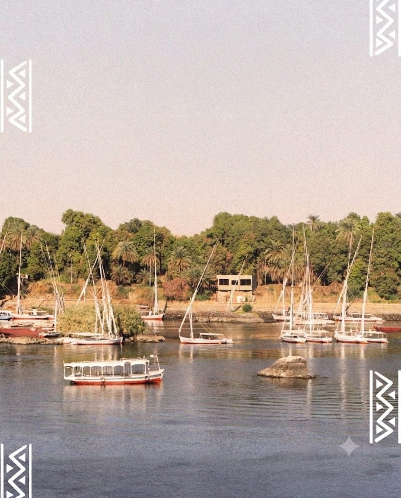
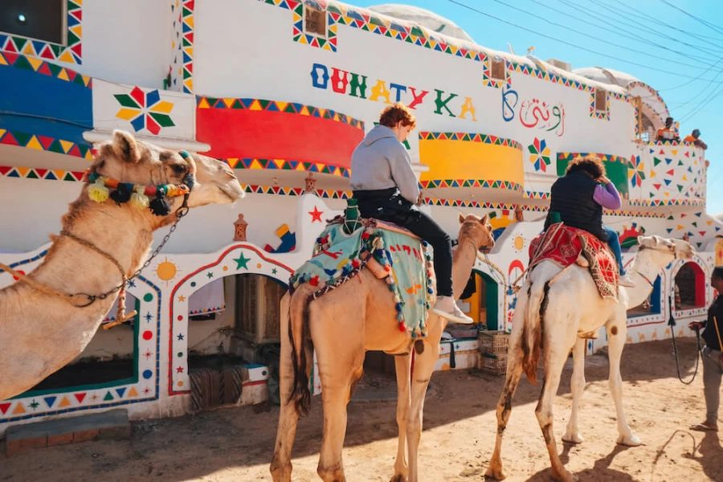
النوبة… حضارة تمتد لآلاف السنين
اكتشف تاريخ النوبة العريق، ثقافتها الفريدة، فنونها، موسيقاها، لغتها، وكرم أهلها على ضفاف النيل في أسوان.
شعبٌ يحمله النيل
شعب يمتدّ جذوره في أعماق التاريخ، يحيا على ضفاف النيل بين أسوان وكرمة، يحمل تراثًا متفردًا في اللغة والفن والعلاقات الاجتماعية.
"أرض الذهب… وأرض القوس" — إرث من القوة والكرم والصمود عبر آلاف السنين، لا يزال ينبض على ضفاف النيل في أسوان.
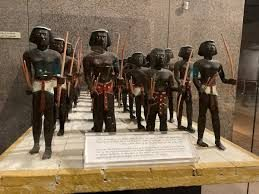
تحفظ المتاحف نماذج أثرية لجنود نوبيين حاملي الأقواس، شاهدة على مهارة رمتها التي عُرفت بها النوبة منذ فجر التاريخ.
خمسة آلاف عام على ضفاف النيل
لم تكن النوبة مجرد بقعة جغرافية على خريطة وادي النيل، بل كانت إمبراطورية متّسعة الأثر، حكمت مصر ذاتها ذات يوم، وتركت وراءها إرثًا معماريًا وفنيًا ولغويًا ما زال حيًا حتى اليوم. قام النوبيون ببناء أهرامات أكثر من تلك الموجودة في مصر، واخترعوا ممالك قوية من كرمة إلى كوش ومروي، وأبدعوا أبجدية خاصة، وطوروا تقنيات الحديد والزراعة والنحت.
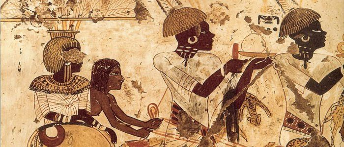
محطات بارزة
مملكة كرمة
أول دولة مركزية في أفريقيا جنوب الصحراء
كوش
"الفراعنة السود" الذين حكموا مصر والنوبة
مروي
صناعة الحديد وبناء مئات الأهرامات
النوبة المسيحية
كنائس مزينة بالفريسكو والصلبان
دخول الإسلام
اتفاقية البقط وامتزاج الثقافات
الخط الزمني الكامل
في كل صورة… حكاية
جولة بصرية بين القرى النوبية، الناس، الموسيقى، الحرف، والطبيعة — كل صورة في هذا المعرض من قلب الحياة النوبية.
النغمة واللسان والروح
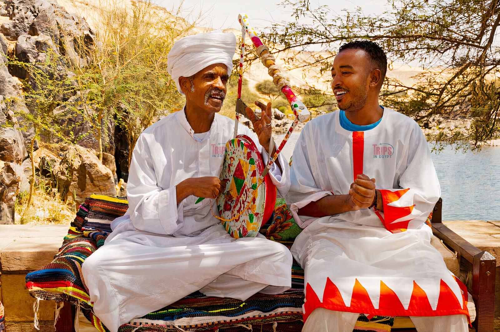
التنبور… روح النوبة
التنبور هو الآلة الوترية المقدسة في الموسيقى النوبية، يصنع منها الفنان أغانيَ للفرح والحب والحنين، وتتوارثه الأجيال كما تتوارث الأرض والاسم.
"حين يعزف النوبي على التنبور، تسمع في أوتارَيه همس النيل وأصداء القرية وأغاني الأجداد."
عناصر الاحتفال
الإيقاع والطار: تبدأ الاحتفالات النوبية بإيقاع الطار والرقص الجماعي الذي يجمع القرية كلها حول الدفوف.
رقصة الأراجيد: رقصة فريدة بحركة الأكتاف والتوازن المتناغم، تُؤدى في الأفراح والمناسبات الكبرى.
السلم الخماسي: سلّم موسيقي مميز يمنح الأغاني النوبية طابعًا شجيًا يختلف عن الموسيقى العربية التقليدية.
مجالس النوبة.. حيث تُروى الحكايات وتُشرب القهوة — تجمعات القرية النوبية.
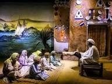
الآلات الموسيقية
التنبور
آلة وترية — روح الموسيقى النوبية
الطار
آلة إيقاعية — قلب الاحتفالات
الإيقاعات الجسدية
تصفيق ودق الأقدام
الربابة
آلة شعبية للسير والقصص
الكنزية والفاديجا… تراث حيّ
يحفظ النوبيون لهجتين رئيسيتين توارثوها أبًا عن جد: الكنزية في الشمال، والفاديجا في الجنوب، وهما وعاء حيّ لنقل التراث الشفهي والقصص والأمثال. استُخدمت اللغة النوبية كشفرة عسكرية في حرب أكتوبر ١٩٧٣ بفضل تعقيدها على العدو، وهي اليوم منارة هوية وحصن ثقافي يحمي الذاكرة النوبية من الذوبان.
"اللغة ليست كلمات فقط… هي بيتٌ نعيش فيه" ✦
لعبة تعلّم سريعة
خمّن مقابل الكلمة العربية باللهجة الفاديجا في خمس جولات.
صناعة أيدي النوبة
من أغنى الثقافات الأفريقية والمتوسطية، تعبير حي عن تاريخ يمتد لآلاف السنين.
الأزياء النوبية
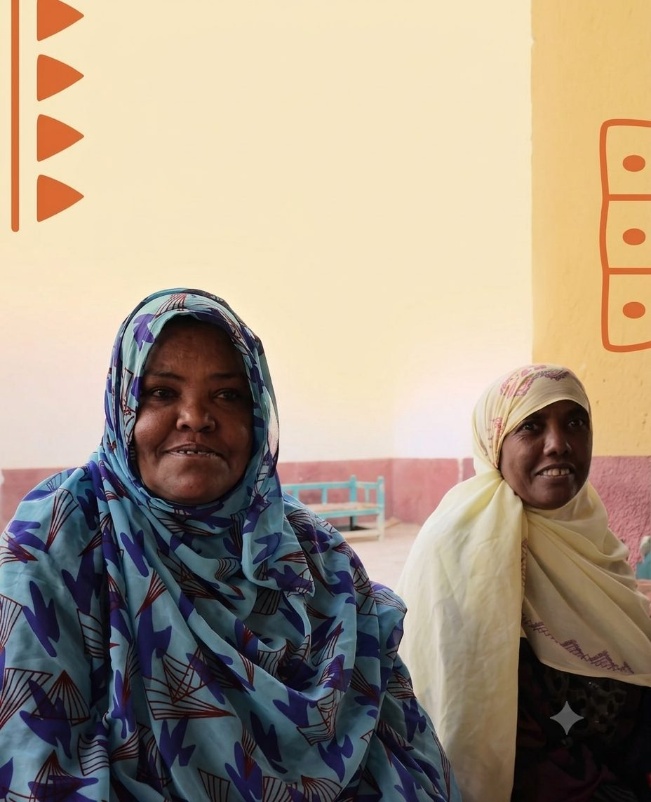
زي المرأة النوبية التقليدي الطويل الذي يميز هويتها في كل مناسبة. الجرجار الأسود الشفاف يُلبس فوق ملابس ملونة، ويتميز بطوله الذي يجرّ خلف المرأة.
الجلباب والعمامة
الجلباب الأبيض والعمامة والصديري النوبي المطرز أحيانًا.
تركواز وذهبي
درجات زاهية من التركواز والذهبي تعكس دفء الطبيعة النوبية، مع نقوش هندسية موروثة تُطرَّز على الأقمشة والعباءات.
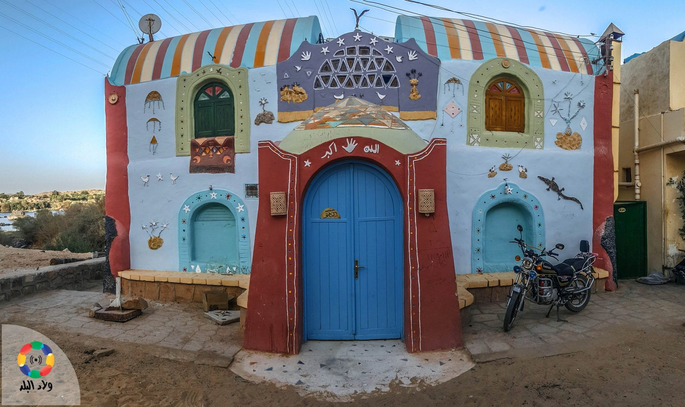
منازل النوبة (العمارة)
تتميز العمارة النوبية بالقباب الطينية والألوان الزاهية والزخارف الهندسية التي تُرسم يدويًا على الجدران. تُبنى المنازل من الطوب اللبن لتلاؤم مناخ الصحراء الحار، مع أفنية داخلية مفتوحة تعزز التهوية وتجمع العائلة.
تحمل واجهات المنازل رموزًا ونقوشًا متوارثة، فتتحول كل بيت إلى لوحة فنية تعكس ذوق أصحابه وهويتهم الثقافية على ضفاف النيل.
التصميم
قباب وقبو (الجريد واللحف) لتبريد الجو طبيعيًا دون الحاجة لتكييف
الألوان والزخارف
واجهات بيضاء تُزين برموز شعبية مثل التمساح للحماية والعقرب لمنع الحسد
المصطبة
جزء أساسي خارج البيت وداخله للجلوس واستقبال الضيوف


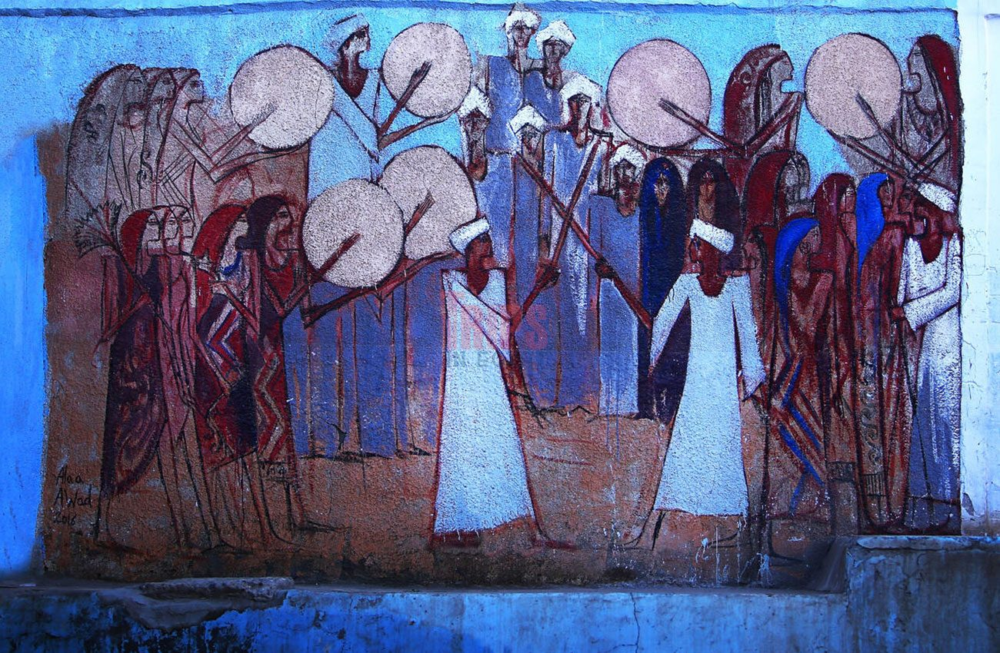
الزفاف النوبي
احتفال حي بالتراث وتأكيد لروابط العائلة وانعكاس لملامح الحضارة القديمة، تشمل احتفالاته "زفة النيل" حيث يذهب العروسان للنيل طلبًا للبركة، وتستمر لعدة أيام وتشمل الخضاب (الحناء).
شروط الارتباط
الأولوية للزواج الداخلي حفاظًا على اللغة والتقاليد، بلا "قايمة"، فالثقة هي الضمان وتُحل الخلافات في "جلسات العرب".
التجهيزات
يُعد الذهب (الشبكة) جزءًا أساسيًا من المهر، ويقدّم العريس "الشيلة" وهي حقيبة هدايا ضخمة من أفخر الثياب.
ليلة الحناء
تبدأ بذبح المواشي وإطعام القرية، وترتدي العروس الساري النوبي الملون بينما تُطبق الحناء وسط الاحتفال.
الزفّة
موكب راقص يرافقه الغناء والتصفيق ورقصات نوبية مميزة، تُؤدى أغانيها باللغتين الفاديجا والكنزية.
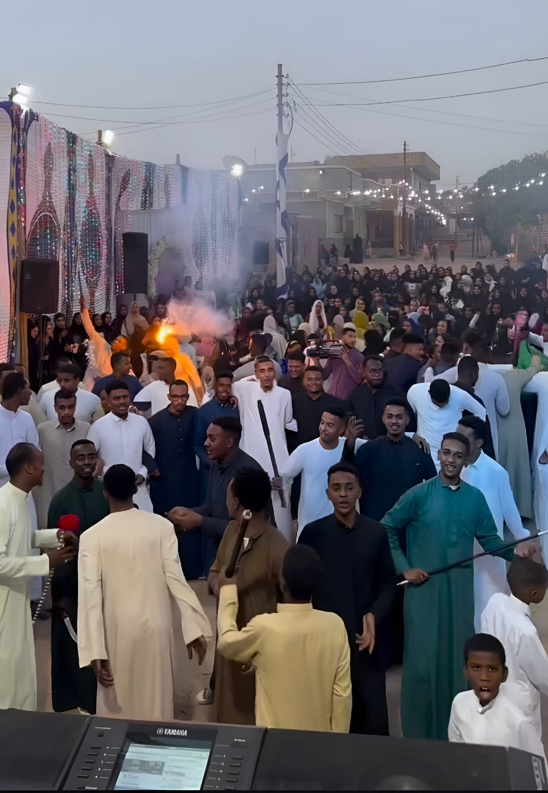
بعد ولادة الطفل بسبعة أيام، تأخذه الأم في موكب مع نساء القرية إلى شاطئ النيل، وتغسل وجهه بمياهه، وترمي الفشار والبلح في الماء كهدية للنهر لضمان أن يعيش الطفل حياة رخاء.
حرف النوبة اليدوية
من سعف النخيل إلى الفخار والفضة، تتوارث الأسر النوبية حرفًا تحمل ذاكرة المكان.
أسواق القرى النوبية تعرض هذه الحرف يوميًا لأهالي أسوان وزوارها.
السلال الملونة
مصنوعة من سعف النخيل بألوان زاهية متعددة
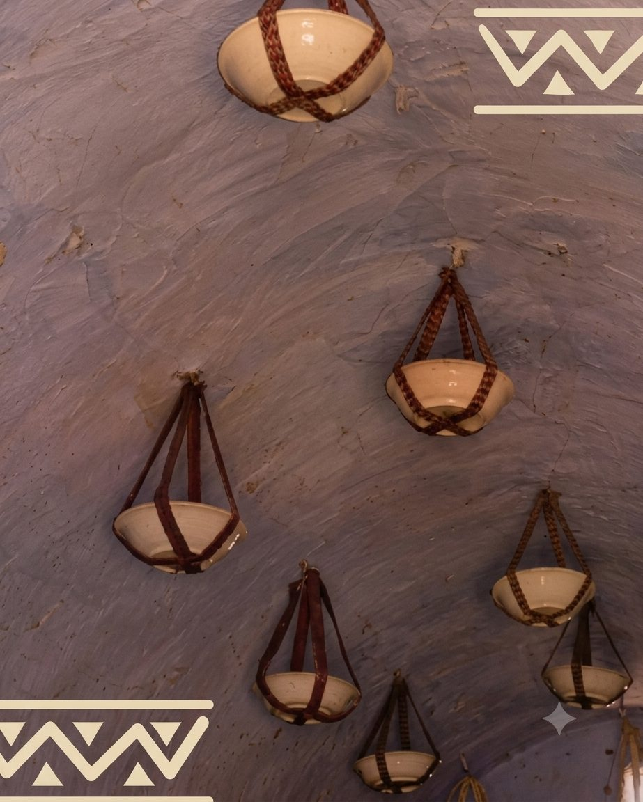
الفخار المزخرف
أواني فخارية بنقوش هندسية موروثة
أسواق التذكارات
دفوف ومنحوتات خشبية وأقواس تقليدية للزوار
الحُلي الفضية
خرز ومجوهرات تعكس ذوق المرأة النوبية
الأعياد والمناسبات
يتبادل الجميع التحية بعبارة "كوريج أنجا ناليه" (عيد سعيد)، مع ارتداء الزي التقليدي وإعداد الأطباق الخاصة.
عيد الفطر — ١ شوال
صلاة العيد، زيارة الأقارب، وتبادل الحلويات، مع طبق "شعرية الحليب" التقليدي.
عيد الأضحى — ١٠ ذو الحجة
تقديم "الجكوت" و"الكشيد"، وتتزين النساء بالجرجار النوبي.
يوم النوبة العالمي — ٧ يوليو
احتفاء عالمي بالثقافة النوبية، والرقم ٧ مقدّس في الطقوس النوبية القديمة.
لحظات من الحياة النوبية
ضفاف النيل
النيل شريان الحياة الذي يربط النوبة من شمال السودان إلى أسوان.
الجمال والنخيل
رفيق السفر والترحال في الصحراء، يحكي قصص القوافل القديمة.
الواجهات الملونة
رموز زخرفية تروي حكايات الأجداد وتحمي البيت من الحسد.
الإبداع النوبي جعل القرية مزارًا عالميًا؛ لأن الناس يشعرون بصدق الشعب الذي صنعه.
إيقاع هادئ على ضفاف النيل
تتميز الحياة النوبية بنمط فريد يجمع بين البساطة المتناهية والارتباط الوثيق بالنيل.
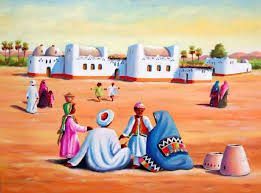
طبيعة العمل (الكدح الهادئ)
الزراعة والصيد: ارتبط العمل تاريخيًا بالأرض والنيل؛ زراعة النخيل والحبوب هي الحرفة الأساسية، وصيد الأسماك جزء أصيل من المعيشة.
الحرف اليدوية: تبدع النساء في صناعة الخوص والأطباق الملونة والمشغولات الخرزية، وهي مهنة تتوارثها الأجيال.
السياحة المجتمعية: أصبح استقبال السياح في البيوت النوبية الملونة وتقديم التراث جزءًا حيويًا من العمل اليومي.
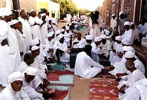
روتين الحياة (إيقاع الطبيعة)
التبكير: يبدأ اليوم مع خيوط الفجر الأولى، حيث الهدوء والسكينة هما سيدا الموقف.
جلسة المصطبة: ركن أساسي في كل بيت نوبي، وهي مكان التجمع اليومي لتناول الشاي باللبن وتبادل الأحاديث.
العمارة النفسية: تصميم البيت بأسقفه العالية وألوانه الزاهية ينعكس على نفسية السكان، فيجعل الروتين مريحًا وغير ضاغط.
الاحترام الهرمي
لكبار السن مكانة مقدسة، وكلمة "الكبير" مسموعة ومطاعة، مما يحافظ على استقرار المجتمع.
الأمان والخصوصية
تمتاز القرى النوبية بخصوصية عالية وأمان كبير، فالكل يعرف الكل، وهذا يخلق بيئة تربوية مثالية.
معابد ونيل وقرى لا يبليها الزمن
تمتزج فيها المعابد الشامخة بجمال النيل وقرى تحكي حياة أصيلة لم تتغير.
المعالم التاريخية

معبد أبو سمبل
أعظم معابد رمسيس الثاني المنحوتة في الصخر
معبد فيلة
لؤلؤة النيل المخصصة للإلهة إيزيس

متحف النوبة
يضم آلاف القطع التي توثّق تاريخ المنطقة
القرى النوبية

غرب سهيل
القرية الأشهر ببيوتها الملونة وتجربة ركوب الجمال
جزيرة هيسا
هدوء تام وسط صخور النيل الجرانيتية
أفضل وقت للزيارة
أفضل وقت للزيارة بين شهري أكتوبر ومارس، حيث الجو معتدل ومناسب لجولات المعابد والقرى.
اقتراح رحلة ٣ أيام
أسوان والنيل
نزهة بالمركب الشراعي على النيل، وزيارة قرية غرب سهيل الملونة.
فيلة والمتحف
معبد فيلة صباحًا، ثم متحف النوبة لاستكشاف تاريخ المنطقة.
أبو سمبل
رحلة إلى معبدَي أبو سمبل، مع وقت هادئ عند جزيرة هيسا إن أمكن.
نكهات الأرض والنهر
نكهات طبيعية تعتمد على محاصيل البيئة المحلية مثل القمح والذرة والكركديه، وتعتمد بشكل أساسي على "الويكة" (البامية المجففة المطحونة) ومرق اللحم الدسم.
أشهر الأطباق
الجاكود
مرقة من البامية المجففة مع مرق الضأن والخضروات.
الكاشيد
لحم محمّر مع البصل والسمن، من أطباق المناسبات الرئيسية.
الأرتي (البامية المفروكة)
بامية خضراء طازجة مع الكزبرة والشبت، تُهرس يدويًا.
المعجنات والمخبوزات
الخبز هو "سيد المائدة" في النوبة، وتتنوع أشكاله حسب طريقة الطهي:
الخمريت
خبز نوبي مخمّر يتميز بطراوته ومذاقه الغني.
الكابد
خبز رقيق وطري، يؤكل غالبًا مع العسل أو المرق.
أصوات من أرض النوبة
وجوه حملت اسم النوبة
في الأدب والفكر (حراس الهوية)
محمد خليل قاسم
صاحب رواية "الشمندورة"، التي تُعد "إنجيل النوبيين"، أرّخ فيها لحياة النوبيين ومعاناتهم مع التهجير.
حجاج أدول
أديب ومناضل نوبي عالمي، نال جوائز عديدة وتركز كتاباته على الخصوصية الثقافية للنوبة.
إدريس علي
روائي نوبي جريء، ناقشت رواياته مثل "دنقلة" قضايا التهميش والبحث عن الذات.
في الفن والموسيقى (سفراء النوبة)
محمد منير
أهم رمز نوبي معاصر، نقل السلم الموسيقي الخماسي النوبي إلى العالمية ومزجه بموسيقى الجاز والروك.
أحمد منيب
الأب الروحي للأغنية النوبية الحديثة، وضع أساس مدرسة "منير" الغنائية بألحان خالدة.
حمزة علاء الدين
فنان نوبي عالمي وعازف عود، وصل بموسيقى النوبة إلى مسارح أمريكا واليابان.
في البطولة والسياسة
المشير محمد حسين طنطاوي
ابن قرية أبو سمبل، شغل منصب وزير الدفاع وقاد البلاد في فترة انتقالية حرجة.
أحمد إدريس
صاحب فكرة "الشفرة النوبية" في حرب أكتوبر، اقترح استخدام اللغة النوبية لتضليل العدو.
زكي مراد
أحد أبرز السياسيين والمثقفين النوبيين وكان له دور كبير في الحركة الوطنية المصرية.
في الرياضة والعمل الاجتماعي
شيكابالا (محمود عبد الرازق)
أيقونة نادي الزمالك، من أشهر الرياضيين النوبيين بفضل مهارته وانتمائه لجذوره.
المشير عبد الغني الجمسي
أحد مهندسي حرب أكتوبر ١٩٧٣.
حكايات توارثها الأجداد
قصة شفرة الحرب (البطولة الصامتة)
من أشهر القصص التي يفتخر بها النوبيون هو دور لغتهم في حرب أكتوبر ١٩٧٣. اقترح أحمد إدريس، نوبي من قرية توماس وعافية، استخدام اللغة النوبية كشفرة عسكرية لأن العدو لن يستطيع فك رموزها، وكانت السر الذي أمّن الاتصالات المصرية.
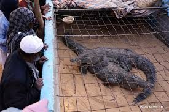
أسطورة تمساح النيل الصديق
في قرية غرب سهيل، يحكي الأجداد أن التمساح ليس وحشًا بل بركة النيل. كان النوبي يصطاد التمساح الصغير ويربيه في حوض بالمنزل ليحمي البيت من الحسد، وعند موته يُحنّط ويُعلّق فوق الباب كحارس للمنزل.
حكاية السبوع والنيل (المعمودية النوبية)
بعد ولادة الطفل بسبعة أيام، تأخذه الأم في موكب مع نساء القرية إلى شاطئ النيل، وتغسل وجهه بمياهه، وترمي الفشار والبلح في الماء كهدية للنهر لضمان أن يعيش الطفل حياة رخاء.
قصة البيت المفتوح (كرم الفطرة)
كانت أبواب البيت النوبي القديم تُبنى طويلة ومفتوحة دائمًا، ليس فقط للتهوية بل ليرى العابرون صينية الطعام في وسط الدار؛ فمن شيم النوبي أنه لا يأكل وحده، ويشارك أي غريب الجاكود والخبز.
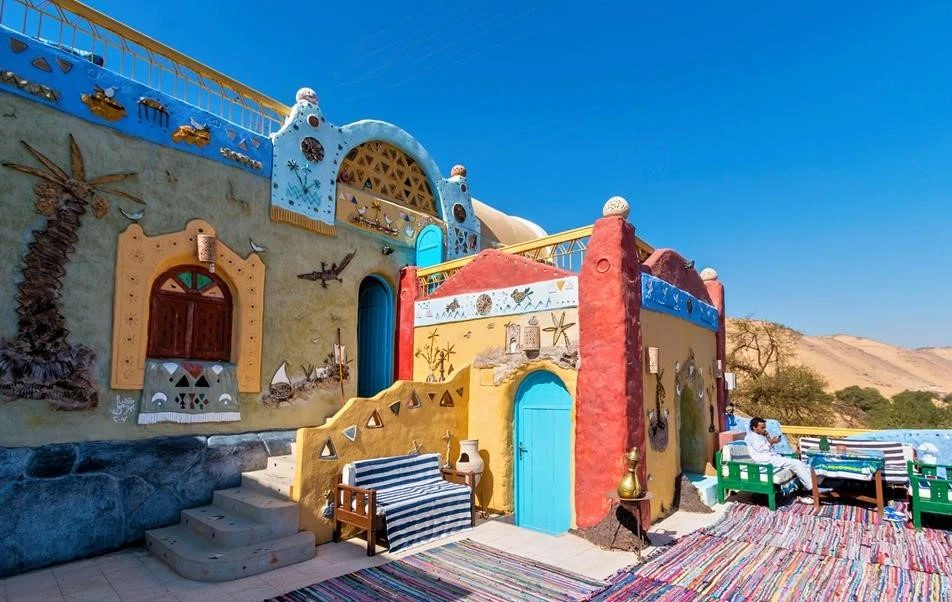
حكايات الشمندورة والعودة
بعد تهجير النوبيين عند بناء السد العالي، ولدت قصص كثيرة حول الشمندورة (فانوس يرشد المراكب) كرمز لغرق القرى القديمة، بينما ظل النوبيون يروون لأبنائهم حكايات البلاد القديمة وأسماء النخيل الذي تركوه هناك.
أسئلة يتكرر طرحها
اختبر نفسك في تراث النوبة
خمسة أسئلة سريعة لتختبر معرفتك بتاريخ النوبة وثقافتها.